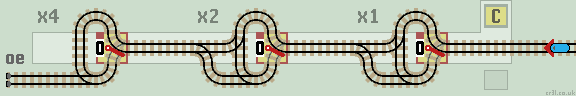
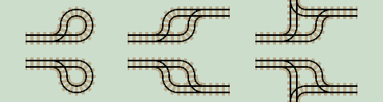

Functions
Finally, we can look at a typical task, shown as a self contained function. The function holds data (a binary number) in a horizontal register of lazy points.
For example, this is a 'Count Up' function. The train increments the binary number, held in register C, by 1 and returns back along the same track.
| 
|
| Click layout to pause/run train | Click points to switch 0/1 | Click start circle to reset train/points |
This 3-stage counter counts up to 7 (binary 111). The data indicates the number of times the train has visited the circuit.
Overflow

An additional count above 111 causes the train to enter the error siding and stop, as the Counter has overflowed. In larger layouts, all errors are returned to the error siding close to the start.
Readout
The 'readout' uses some behind-the-scenes Javascript to display the register binary data in base 10. This has no effect on the train or layout, but makes the computation easier to follow if you're not familiar with numbers in base 2.
Note that the readout is updated whenever a point is switched, so it can show some spurious (but temporary) numbers.
Reset

Click the yellow start circle to reset a running train back to its start position. Click again to reset all lazy points to their initial positions.
This is also called the 'Halt' position as the train returns to the start and halts indicating that the computation (in this case adding 1) has been completed successfully.
Later, we will construct a train track computer and use these self contained functions to create a functions library which can be called by a program loop.
Duplo
Duplo can be used to build real examples (see Duplo pages). You can see this layout in action on You Tube!
Simplification
In their paper Train Sets, Chalcraft and Greene describe a method to simplify a layout without altering the route of the train. Once completed, it then consists of only lazy points and roundabouts. Every section of track is two-way except the track inside a roundabout which is one-way.
The Count Up function is fully simplified, as it contains only lazy points and roundabouts (see below).
Roundabouts
Roundabouts are a group of sprung points arranged in a ring. When a train enters a roundabout, it travels to the next exit to the left (clockwise) or right (anti-clockwise) along one-way track and exits the roundabout.
|  |
Merging Track
When merging two lines together, it's sometimes neater and more compact to use a single 'merger' junction. The first tile looks similar to a lazy point. However, if a train arrives on the main line, it won't know which way to go! Ensure that the main line feeds into another branch line so this never happens. The second merger junction is a better solution. |
|
Next page, we'll have a look at more single point Functions which will be used in the later example layouts.